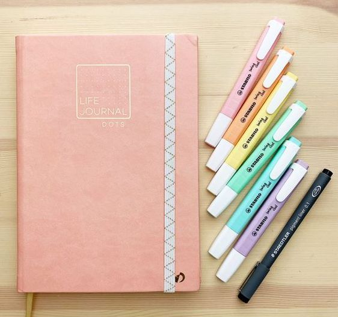

/11.png)

手帳起源
手帳，來源於日本，本意是指隨身攜帶、隨時記事的一個本子。在日本，無論男女老少，幾乎每人都會隨身攜帶一個被稱爲『手帳』的記事本，隨時翻看 、或在本子上記錄些什麼。
據說，手帳在明治時期就已經出現。它最早是爲政府和軍隊官員特別設計的，作爲」行程記錄本「供其使用，在很久以前就傳入中國並不斷流傳下來。發展至今，手帳的用途和類型已經非常豐富了。
手帳區別於寫日記，在於更側重於回憶、計劃和記錄，它可以成爲我們的日程本、工作計劃、備忘錄、單詞本、帳本、剪貼本等等。總而言之，手帳可以說是一種極好的生活方式，它適合所有人。
最簡單的手帳，只需要一個本子一支筆就可以了，手帳通過文字、繪畫、貼畫等方式，記錄我們的工作、學習和生活，讓我們可以高效有計劃的工作，記錄豐富多彩的生活，也擁有珍藏的回憶。其實手帳是一種生活態度，是對美好生活的追求。
什麼是手帳？
很多人第一次接觸到手帳都會問，手帳是什麼，是記賬麼？是日記麼？都會做的很好看麼？要買很多膠帶貼紙嘛？
其實手帳通俗的來說，就像開頭說到的，是用來記事情的本子，當然現在也有很多關於手帳的APP，我這裏說的還是紙質版的手帳形式啦。
手帳從內容上來說，可以是日記本、記賬本、閱讀筆記本、觀影筆記本、健身打卡本、菜譜本；從功能看，主要分爲記錄和計劃。記錄顧名思義就是記下所有想記錄的東西，而計劃，就是利用各種月計劃、周計劃、時間軸等達到安排事情的目的；從形式上來說，可以有活頁本、定頁本、TN本；從尺寸上也有A5/B5/A6等等。
很多人關注到手帳可能是因爲羨慕別人做的很好看的拼貼，想要動手創造屬於自己的美好；或是覺得日常生活有太多開心或不開心的的事情，想要用一個小本本記錄下自己的點滴；或者就是想拿一個本子開始列一些計劃，好安排日常瑣事，這些都可以是你開始手帳生活的原因。